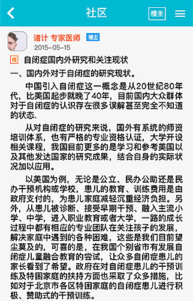

电子病历本
孤独症儿童发展评估表测评
孤独症儿童发展评估表本量表的编制以认知心理学、语言学、社会学、生理学、生态学、儿童发展心理学、孤独症儿童的心理发展理论等为依据，将心理评估、生态评估及功能性评估等评估方式方法进行整合，采用观察、测试、访谈等方法,凭借一系列的评估材料对0-6岁的孤独症儿童及其它广泛发育障碍儿童的发展现状及需要进行评估。
确认
取消
1.感知觉
完成
2.粗大运动
完成
3.精细运动
完成
4.语言与沟通
5.认识能力
6.社会交往
7.生活自理能力
看帖
热门
[置顶]社区管理规定
[置顶]新注册用户入门指南
【前方直击】世界提高自闭症意识日
因为星星看着彼此很近其实很远，独自在远方闪烁，就像自闭症的小宝宝们，明明彼此身体的距离很近，心却如此遥远，只是活在自己的世界。
【分享】今天的两位主角
朱骥专家谈如何提高自闭症儿童的视觉认知能力、视觉与记忆康复疗法、认知治疗、自闭症儿童认知训练的干预策略。
【经验】我是如何度过最初的日子

专家圈
入门指南
训练方法
在线评测
在线评测
入门指南
训练方法
克莱格格易
我的收藏
预约记录
历史记录
我的基本资料
设置
电子病历本
社区
发现
我的


 我的收藏
我的收藏
 预约记录
预约记录
 历史记录
历史记录
 我的基本资料
我的基本资料
 设置
设置